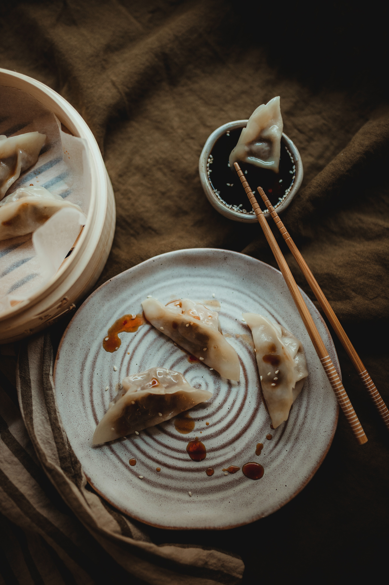
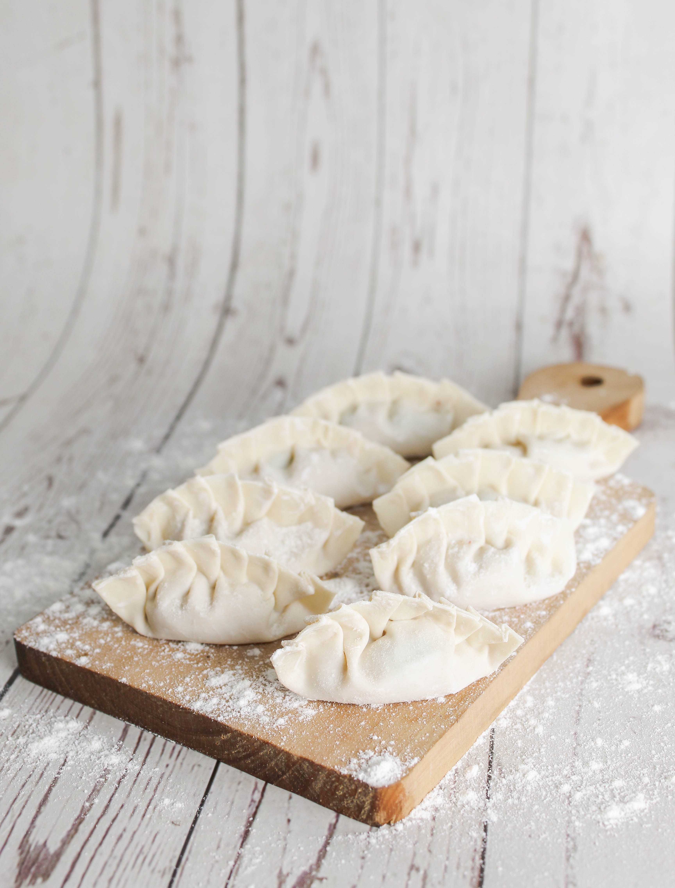
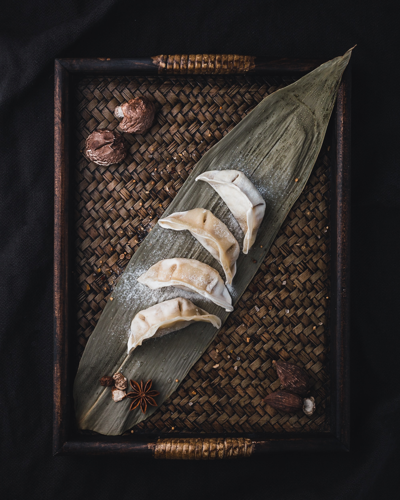
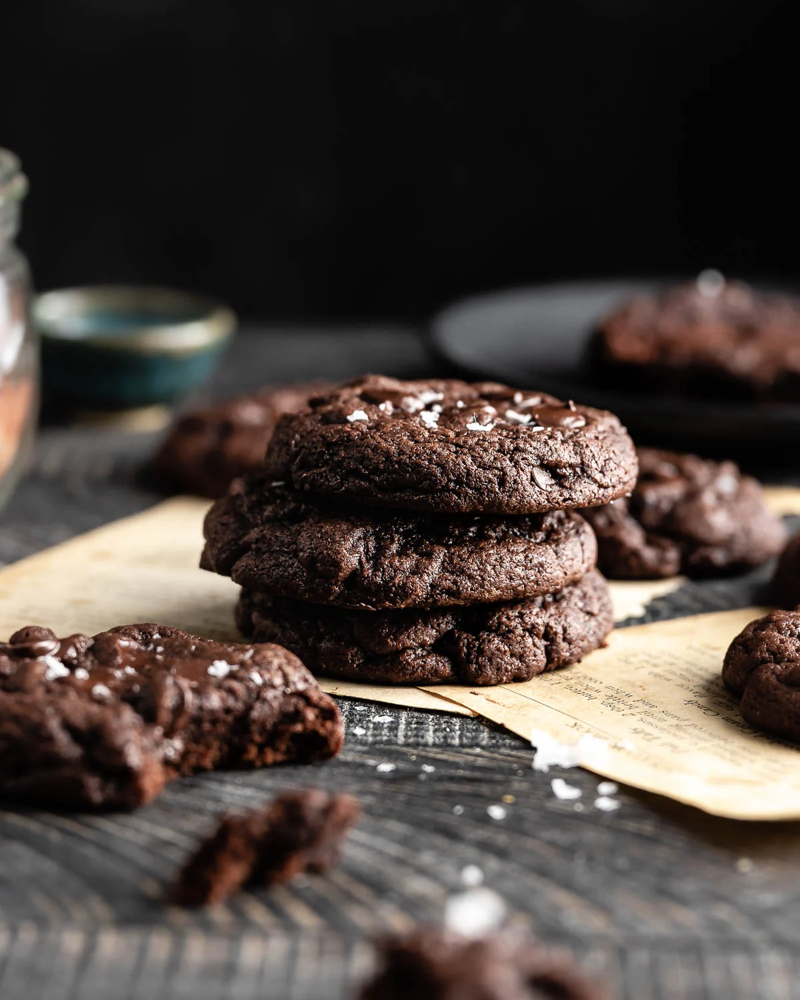
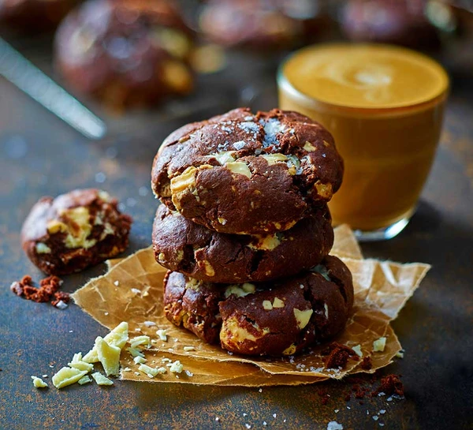
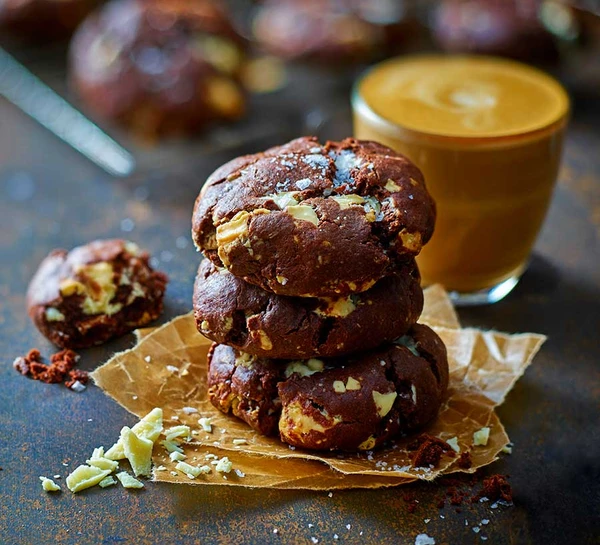

Delicious Recipes
Coca-Cola Chicken Wings

Coca Cola Chicken Wings is a delicacy made mainly from chicken wings and cola, with cooking wine, ginger, soy sauce (soy sauce), salt, and chicken essence (optional) as seasonings. Coca Cola chicken wings have the characteristics of delicious taste, bright color, tender and smooth chicken, and moderate salty and sweet taste. It can be consumed by the general population and is not suitable for people with colds, fever, excessive internal heat, and heavy phlegm and dampness. Patients with hot toxic furuncles, hypertension, high blood lipids, cholecystitis, cholelithiasis, and diabetes should not eat.
Recipe Ingredients
- Chicken wings
- Scallions
- Ginger slices
- Cooking wine
- Dark soy sauce
- A can of coke
Recipe Steps
- Wash and place chicken wings in a bowl
- Add scallions, ginger slices, cooking wine, dark soy sauce and salt to the washed chicken wings, and mix them well
- Cover the bowl with plastic wrap and marinate the chicken wings for 1 hour
- Put the right amount of oil in the pot, and put the marinated chicken wings into the pot and fry it until golden brown on both sides
- After fry the chicken wings until golden brown on both sides, then pour a can of coke into the pan and bring to a boil
- Continue to cook for an additional 2-3 minutes until the glaze has thickened and coats the wings nicely
- Transfer the Coca-Cola glazed chicken wings to a serving platter
Additional Food Images


Chinese Jiaozi (Dumplings)
Chinese dumplings (Jiaozi, 饺子) are stuffed parcels made of unleavened dough and savoury fillings consisting of minced ingredients like meat, egg, tofu, or vegetables. They can be boiled, pan-fried or steamed.
Recipe Ingredients
- Dumpling skins
- Fillings
- Seasonings
- Water
- Additional ingredients
- Cooking oil or sesame oil
Recipe Steps
- Dough: Dough is the foundation for countless baked and cooked dishes. It's made from flour, water, and other ingredients, with various textures and flavors.
- Filling: Filling enhances the taste and texture of dishes. It can be sweet or savory, used in pies, dumplings, and sandwiches.
- Folding: Folding is a technique to combine ingredients gently, maintaining texture and flavor. It's used in recipes like soufflés and mousse.
- Cooking: Cooking transforms raw ingredients into delicious dishes. It's a creative process with various methods.
- Dipping sauces: Dipping sauces complement dishes with diverse flavors, like ketchup, mustard, and soy sauce. They add an extra layer of enjoyment.
Additional Food Images
  Double Chocolate Cookies
My daughter learned to make these cookies at a baking camp at Zingermanns and has tweaked the recipe to fit the taste buds of her siblings. They are extremely sugary so the salt helps to balance it. Note, these cookies are best eaten very quickly.
Recipe Ingredients
- Unsalted butter
- Granulated Sugar
- Packed light or dark brown sugar
- Large egg
- Pure vanilla extract
- Semi-sweet chocolate chunks (melted)
- All-purpose flour
- Natural unsweetened cocoa powder
- Baking soda
- Salt
- Semi-sweet chocolate chunks
Recipe Steps
- In a mixing bowl cream together the butter, granulated sugar, and brown sugar
- Add the egg and vanilla extract and beat well
- Add the melted chocolate
- In a separate bowl combine the flour, baking soda, cocoa powder and salt
- Combine the wet and dry ingredients
- Add the unmelted chocolate chunks.
- Form 15 cookies and place on a baking sheet.
- Cook for 12 to 13 minutes at 350 degrees.
Additional Food Images
 
